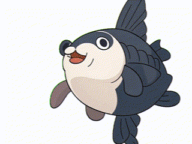

正在加载
Mola
GPT...
默认模型
自动
跟随系统主题
日间
浅色主题
夜间
深色主题
时刻准备着。
推理
强度:
中
↵
已上传
0
个文件
清空
设置
模型连接
API 地址
Ollama 默认地址为 http://localhost:11434/v1/chat/completions
API Key（可选）
模型通过顶部下拉菜单添加和管理，输入 Ollama 模型 ID 即可（如 qwen2.5:7b）。
系统提示词
自定义系统提示词
留空则使用默认提示词。此提示词会作为 system message 发送给模型。
模型参数
创造力 (Temperature)
保守
创造
0.7
最大上下文轮数
许可证
机器码
授权码
输入行为
Enter 键行为
换行（默认）
发送消息
确认删除
确定要删除这个对话吗？此操作不可撤销。